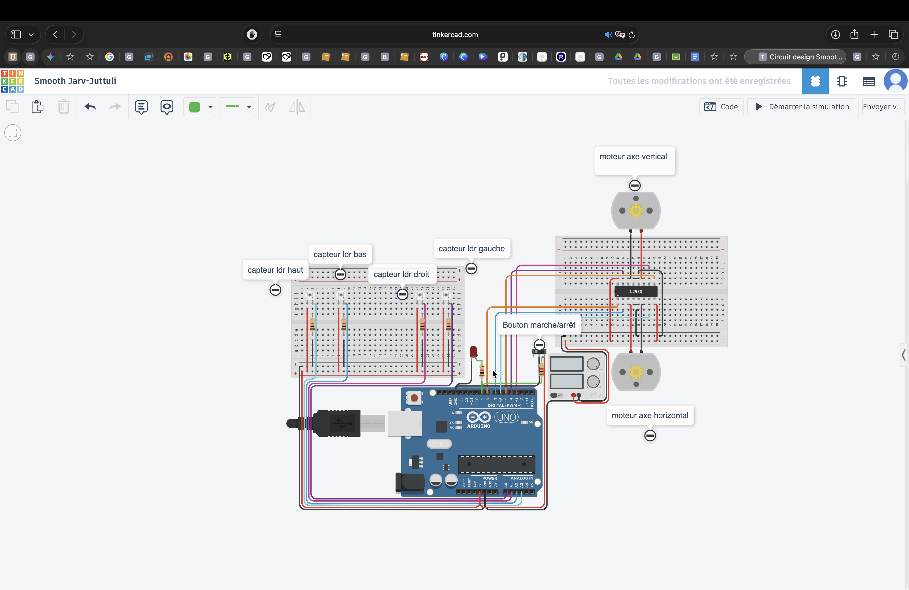
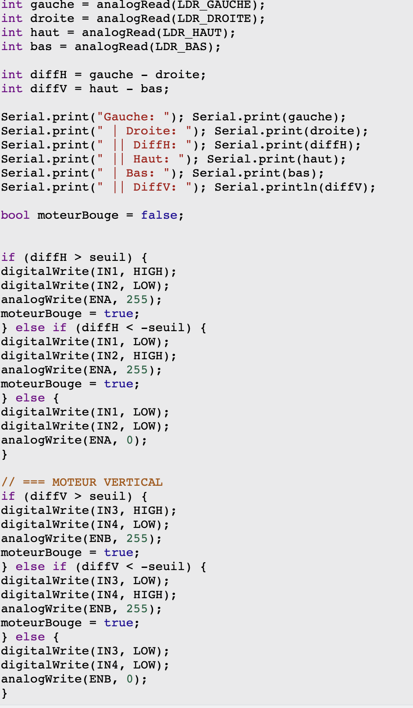

Tracker Solaire Automatisé
Projet Technique STI2D (SIN)
Le défi technique
Un panneau solaire fixe perd de l'efficacité quand le soleil bouge. Mon objectif : Créer un système autonome capable de suivre la lumière pour augmenter le rendement électrique de 30 à 40%.
Le principe : Quatre capteurs de luminosité (LDR) détectent la position du soleil. Une carte Arduino analyse ces données et pilote deux moteurs pour orienter le panneau pile en face des rayons.
Démonstration en vidéo
Voici le prototype en action :
Conception Électronique
Le système utilise un Pont en H (L293D) pour contrôler le sens de rotation des deux moteurs (Axe Horizontal et Vertical).

- Cerveau : Carte Arduino Uno
- Yeux : 4 Photorésistances (LDR)
- Muscles : 2 Moteurs pilotés par L293D
L'Algorithme (C++ / Arduino)
Le programme compare la luminosité reçue à gauche et à droite. Si la différence dépasse un seuil, le moteur s'active.

// Logique simplifiée :
int diffH = gauche - droite;
if (diffH > seuil) {
// Plus de lumière à gauche
tournerVersLaGauche();
}
else if (diffH < -seuil) {
// Plus de lumière à droite
tournerVersLaDroite();
}
Analyse du système (SysML)
Structure des chaînes fonctionnelles :
- Chaîne d'information : Acquérir (LDR) ➔ Traiter (Arduino) ➔ Communiquer.
- Chaîne d'énergie : Alimenter ➔ Moduler (L293D) ➔ Convertir (Moteurs) ➔ Agir.